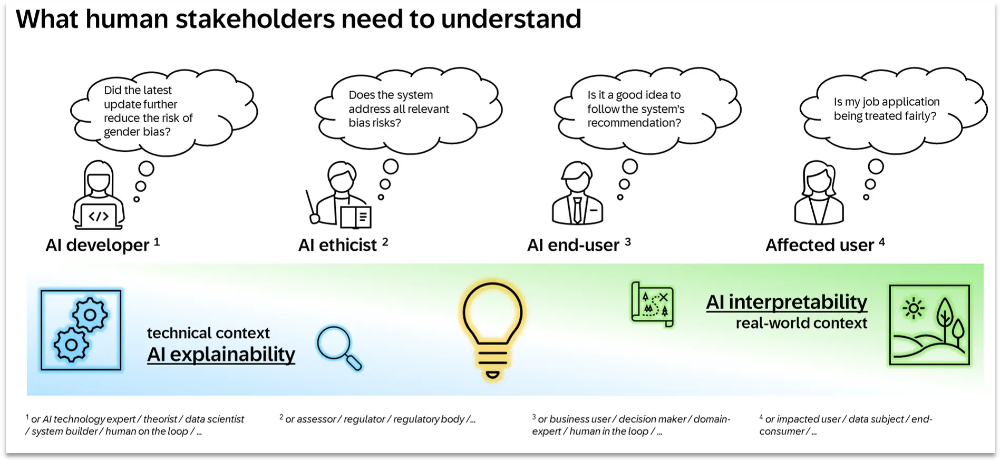
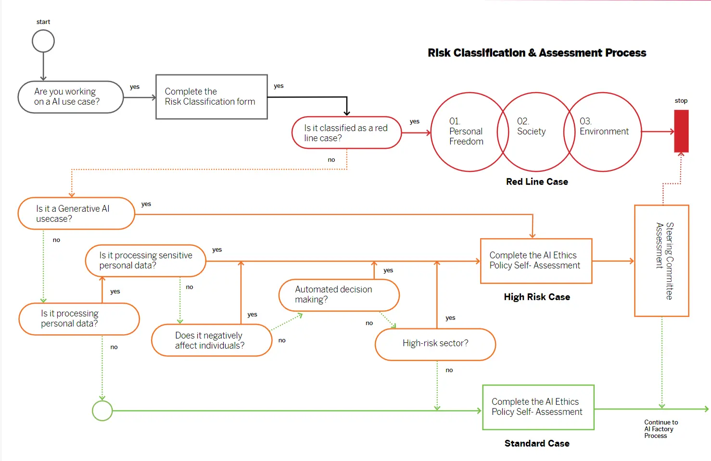

Chapter 7: AI Ethics
Gain an understanding of the AI ethics, including principles, responsible AI practices, and ethical
challenges.
Introduction to AI ethics
Imagine an AI system that predicts the likelihood of future criminal behavior and is used by judges to
determine sentencing lengths. What happens if this system disproportionately targets certain
demographic groups?
AI ethics is a force for good that helps mitigate unfair biases, removes barriers to accessibility, and
augments creativity, among many other benefits. As organizations increasingly rely on AI for decisions
that impact human lives, it’s critical that they consider the complex ethical implications because
misusing AI can cause harm to individuals and society—and to businesses’ bottom lines and reputations.
Examples of ethical AI principles
The well-being of people is at the center of any discussion about the ethics of AI. While AI systems can
be designed to prioritize morality and ethics, humans are ultimately responsible for ensuring ethical
design and use—and to intervene when necessary.
There’s no single, universally agreed-upon set of ethical AI principles. Many organizations and
government agencies consult with experts in ethics, law, and AI to create their guiding principles.
These principles commonly address:
- Human wellbeing and dignity: AI systems should always prioritize and ensure the wellbeing,
safety, and dignity of
individuals, neither replacing humans nor compromising human welfare
- Human oversight: AI needs human monitoring at every stage of development and use—sometimes
called “a human in the loop”—to ensure that ultimate ethical responsibility rests with a human
being.
- Addressing bias and discrimination: Design processes should prioritize fairness, equality,
and representation to mitigate bias and discrimination
- Transparency and explainability: How AI models make specific decisions and produce specific
results should be transparent and explainable in clear language
- Upholding data privacy and protection: AI systems must meet the most stringent data privacy
and protection standards, using robust cybersecurity methods to avoid data breaches and unauthorized
access
- Promoting inclusivity and diversity: AI technologies need to reflect and respect the vast
range of human identities and experiences
- Society and economies: AI should help drive societal advancement and economic prosperity for
all people, without fostering inequality or unfair practices
- Enhancing digital skills and literacy: AI technologies should strive to be accessible and
understandable to everyone, regardless of a person’s digital skills
- The health of businesses: AI business technologies should accelerate processes, maximize
efficiency, and promote growth.
AI ethics terms and definitions
As an intersection of ethics and high technology, conversations about ethical AI often use vocabulary
from both fields. Understanding this vocabulary is important for being able to discuss the ethics of AI:
AI: The ability of a machine to perform cognitive functions we associate with human minds, such as
perceiving, reasoning, learning, and problem solving. There are two main types of AI systems, and some
systems are a combination of both:
- Rule-based AI, also calledexpert AI, behaves according to a set of fully defined rules
created by human experts—as an example, many e-commerce platforms use rule-based AI to provide
product recommendations
- Learning-based AI solves problems and adapts its functionality on its own, based on its
initial human-designed configuration and training dataset—generative AI tools are examples of
learning-based AI
AI ethics: A set of values, principles, and techniques that employ widely accepted standards of
right and wrong to guide moral conduct in the development, deployment, use, and sale of AI technologies.
AI model: A mathematical framework created by people and trained on data that enables AI systems
to perform certain tasks by identifying patterns, making decisions, and predicting outcomes. Common uses
include image recognition and language translation, among many others.
AI system: A complex structure of algorithms and models designed to mimic human reasoning and
perform tasks autonomously.
Agency: The capacity of individuals to act independently and to make free choices.
Bias: An inclination or prejudice for or against a person or group, especially in a way considered
to be unfair. Biases in training data—such as the under- or over-representation of data pertaining to a
certain group—can cause AI to act in biased ways.
Explainability: The ability to answer the question, “What did the machine do to reach its output?”
Explainability refers to the technological context of the AI system, such as its mechanics, rules and
algorithms, and training data.
Fairness: Impartial and just treatment or behavior without unjust favoritism or discrimination.
Human-in-the-loop: The ability of human beings to intervene in every decision cycle of an AI
system.
Interpretability: The ability for people to understand the real-life context and impact of an AI
system’s output, such as when AI is used to help make a decision about approving or rejecting a loan
application.
Large language model
(LLM): A type of machine learning often used in text recognition and generation tasks.
Machine
learning: A subset of AI that provides systems the ability to automatically learn,
improve from experience, and adapt to new data without being explicitly programmed to do so.
Normative: A key context of practical ethics concerned with what people and institutions “should”
or “ought” to do in particular situations.
Transparency:Related to explainability, transparency is the ability to justify how and why an AI
system is developed, implemented, and used, and to make that information visible and understandable to
people.
How to implement principles for AI ethics
For organizations, there’s more to using AI ethically than just adopting ethical principles; these
principles must be integrated into all technical and operational AI processes. While integrating ethics
might seem cumbersome for organizations rapidly adopting AI, real-world cases of harm caused by issues
in AI model designs and usage show that neglecting proper ethics can be risky and costly.
Who’s responsible for AI ethics?
The short answer: everyone who’s involved in AI, including businesses, governments, consumers, and
citizens.
The different roles of different people in AI ethics
- Developers and researchers play a crucial role in creating AI systems which prioritize human
agency and oversight, address bias and discrimination, and are transparent and explainable.
- Policymakers and regulators establish laws and regulations to govern the ethical use of AI
and protect individuals' rights.
- Business and industry leaders ensure their organizations adopt ethical AI principles so that
they’re using AI in ways that contribute positively to society.
- Civil society organizations advocate for the ethical use of AI, play a role in oversight, and
provide support for affected communities.
- Academic institutions contribute through education, research, and the development of ethical
guidelines.
- End users and affected users, like consumers and citizens, have a stake in ensuring that AI
systems are explainable, interpretable, fair, transparent, and beneficial to society.

The role of business leaders in AI ethics
Many businesses establish committees led by their senior leaders to shape their AI governance policies.
For instance, at SAP, we formed an advisory panel and an AI ethics steering committee, consisting of
ethics and technology experts, to integrate our ethical AI principles throughout our products and
operations. These principles prioritize:
- Proportionality and doing no harm
- Safety and security
- Fairness and non-discrimination
- Sustainability
- Right to privacy and data protection
- Human oversight and determination
- Transparency and explainability
- Responsibility and accountability
- Awareness and technical literacy
- Multistakeholder and adaptive governance and collaboration
Forming an AI ethics steering committee
Establishing a steering committee is vital for managing an organization’s approach to the ethics of AI
and provides top-level accountability and oversight. This committee ensures ethical considerations are
woven into AI development and deployment.
Best practices for forming an AI ethics steering committee
- Composition and expertise: Include a diverse mix of stakeholders with expertise in AI, law,
and ethics. External advisors can offer unbiased perspectives.
- Defining the purpose and scope: Clearly define the committee’s mission and objectives,
focusing on ethical AI design, implementation, and operation. This should align with the company
values, fairness, transparency, and privacy.
- Defining roles and responsibilities: Outline specific roles for the members, such as
developing AI ethics policies, advising on ethics concerns in AI projects, and ensuring compliance
with regulations.
- Setting objectives: Set clear, measurable goals like conducting an annual ethics audit of AI
projects and offering quarterly ethical AI training.
- Creating procedures: Establish operational procedures, including meeting schedules,
documentation standards, and communication protocols to maintain transparency.
- Ongoing education and adaptation: Keep abreast of new developments in AI technology, ethical
standards, and regulations through regular training and conferences.
Creating an AI ethics policy
Developing an AI ethics policy is essential for guiding AI initiatives within an organization. The
steering committee is critical in this process, using its diverse expertise to ensure the policy adheres
to laws, standards, and broader ethical principles.
Example approach for creating an AI ethics policy
- Drafting the initial policy: Begin by drafting a policy that mirrors the organization’s core
values, legal requirements, and best practices. This initial draft will serve as the basis for
further refinement.
- Consultation and input: Engage with internal and external stakeholders, including AI
developers, business leaders, and ethicists, to make the policy comprehensive and representative of
multiple perspectives.
- Integration of interdisciplinary insights: Utilize the varied backgrounds of committee
members to incorporate insights from technology, ethics, law, and business to address the complex
aspects of AI ethics.
- Defining high-risk and red-line use cases: To ensure clarity, the committee should outline
which AI applications pose significant risks or are considered unethical and, therefore, prohibited.
The SAP Steering Committee, for example, categorizes these as:
- High-risk: This category includes applications that can be harmful in any way, and includes
applications related to law enforcement, migration, and democratic processes—as well as those
involving personal data, automated decision-making, or impacting social well-being. These must
undergo thorough assessment by the committee before development, deployment, or sale.
- Red line: Applications enabling human surveillance, discrimination, deanonymization of data
leading to individual or group identification, or those manipulating public opinion or undermining
democratic debates are banned. SAP deems these uses highly unethical and prohibits their
development, deployment, and sale.
- Review and revisions: Continuously review and revise the policy based on feedback, ensuring
it remains relevant and practical for the real world.
- Finalization and approval: Submit the completed policy for final approval by decision-makers,
such as the board of directors, backed by a strong recommendation from the committee.
- Implementation and ongoing oversight: The committee should monitor the policy's
implementation and periodically update it to reflect new technological and ethical developments.
